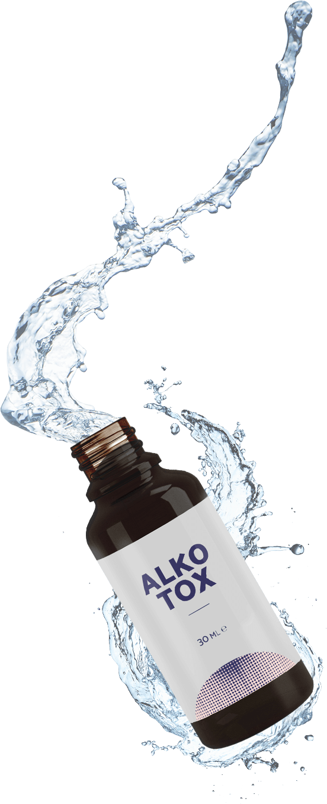

Nikdy není pozdě vrátít se k normálnímu žvotu!
ALKOTOX změní váš život k lepšímu
Hlavní výhoda ALKOTOX spočívá v patentované technologii ultrazvukové extrakce složek. Při působení ultrazvuku je extrakce efektivnější: molekuly si zachovávají svou původní strukturu a biologicky aktivní formu. Díky tomu je lék stejně účinný v boji proti závislosti na alkoholu.
ALKOTOX přirozeně blokuje rozklad ethylalkoholu, který způsobuje trvalou averzi k alkoholickým nápojům.
Jak ALKOTOX vám pomůže překonat závislost a alkoholu?
Ovoce klanoprašky čínské
Neutralizuje chuť na alkohol
Zmírňuje pocit kocoviny a vyvolává trvalou averzi k alkoholu. Normalizuje nervový systém, zmírňuje duševní stres, zlepšuje paměť, koordinaci a koncentraci.
Kořen lékořice
Čistí a regeneruje tělo
Неутрализира отровите и токсините в организма, помага му да се възстанови по-бързо след дълъг прием на алкохол. Пречиства кръвта, помага на вътрешните органи да се върнат в здраво състояние.
Výtažek z pampelišky
Zlepšuje výsledek natrvalo
Způsobuje trvalou averzi k alkoholu, brání vzniku abstinenčních příznaků, bojuje s depresí a zlepšuje náladu.